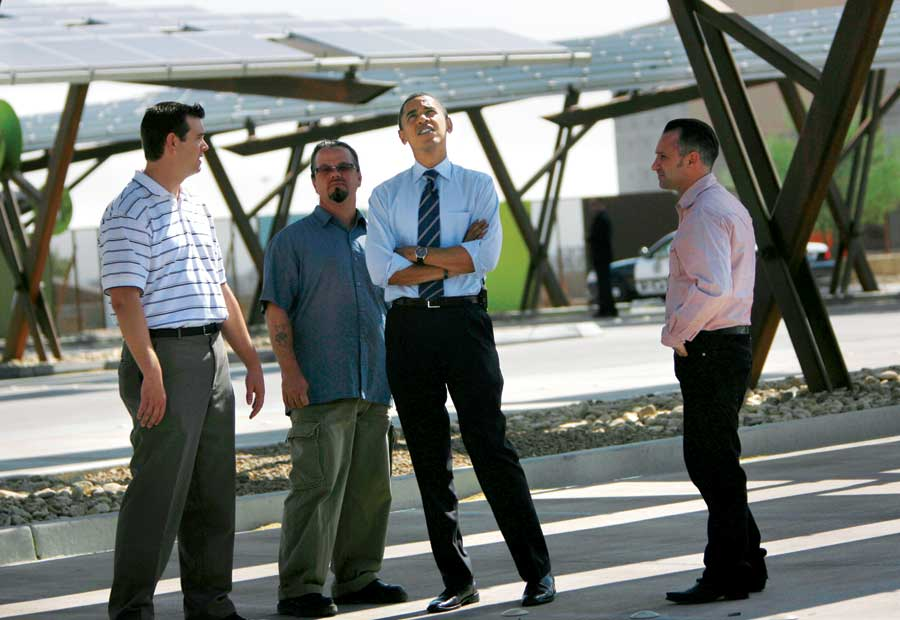
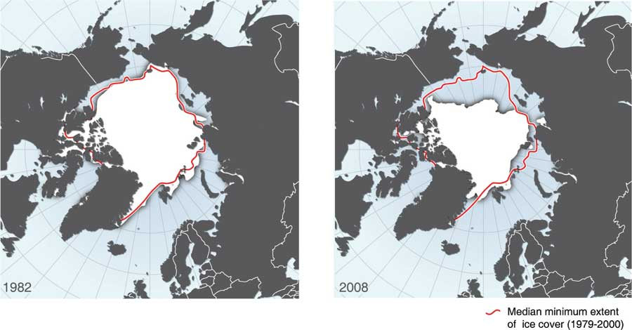
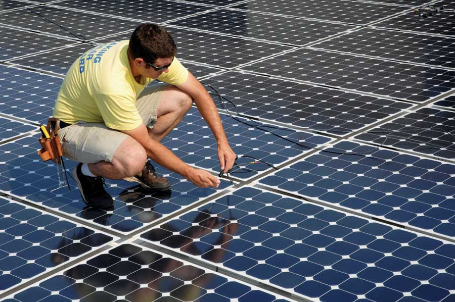
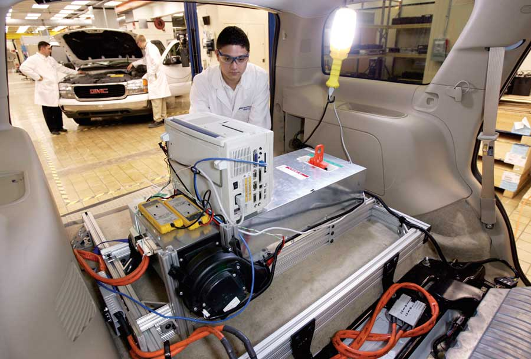
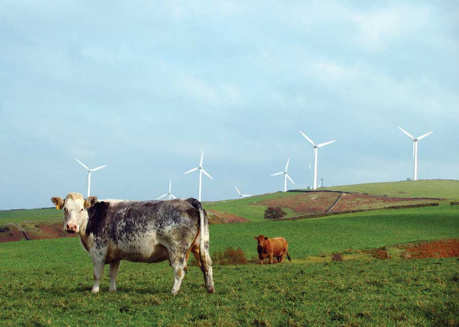

Today, the United States lags behind Europe and Japan in establishing the building blocks for a carbon-neutral future. Once the world leader in renewable energy, America has ceded its place to nations whose governments have made the transition to low-carbon energy a priority. But change is coming.
Those of us who, for the past 30 years, have urged sweeping changes in the nation’s energy posture have always understood the power of the interests aligned against change. We were challenging the oil, coal, electric utility and automobile industries, all of which were profiting handsomely from the status quo. We thought we needed a crisis - an energy “Pearl Harbor” or “Sputnik” challenge - to mobilize the public behind such a far-reaching change. We thought we might have had it in a war in the Middle East, a Chernobyl meltdown or an Exxon Valdez oil spill. But these crises came and went without producing discernible improvement in national energy policy.
Instead, the opportunity now has come in an unexpected form: a global economic crisis coupled with the election of a new president with an unusual willingness to take a fresh look at everything, as well as a House and Senate dominated by his political party and a robust mandate for change from the American public. Already, President Obama has begun working to promote renewable energy, boost energy efficiency, combat climate change, reduce our dependence on foreign oil and create green jobs. All of these changes are desperately needed, and better yet, investing in these areas has the potential to heal the economy and the environment at the same time.
But most importantly, we need to understand the scale of the effort that is needed to solve these problems. We need a national commitment to solar and renewable energy comparable to our mobilization for World War II, when the United States unleashed its scientific creativity and its industrial power to support the war effort. We need what Jimmy Carter referred to during the energy crisis of the ’70s as “the moral equivalent of war.”
In 1979, President Carter announced that by the year 2000 the United States would get at least 20 percent of its energy from renewable sources. The Solar Energy Research Institute (since renamed the National Renewable Energy Laboratory), of which I then served as director, was at the heart of this effort. Leading a team of distinguished scientists and analysts drawn from national labs and major universities, the institute prepared the technical and policy blueprint to meet or surpass the 20 percent goal.
Halfway through his first year in office, President Reagan abandoned the goal. Jim Edwards, the dentist who served as Reagan’s first secretary of energy, reduced the institute’s $125 million budget to just $25 million and fired half its staff. Reagan then ordered that the solar water heaters be ripped off the White House roof.
The successive administrations of George H.W. Bush and Bill Clinton, bobbing along on a sea of cheap oil, did little to promote energy efficiency or to shift America’s economy to renewable energy. And for the past eight years, the United States was led by a president whose energy policy began and ended with Arctic drilling.
The energy situation in the United States is much worse today than it was when President Jimmy Carter left office. Since 1981, our oil imports have grown from 1.6 billion barrels per year to 3.7 billion barrels. Meanwhile, many experts expect world oil production to peak within the next few years. Since 1981, our annual greenhouse gas emissions from burning fossil fuels have grown from 4.7 billion metric tons of carbon dioxide to 5.9 billion metric tons. Climate scientists tell us we’re already above the safe level of carbon dioxide in the atmosphere - 350 parts per million - and this greenhouse gas persists in the atmosphere for centuries. That means that to avoid the worst effects of climate change, we would have to not only reduce carbon dioxide emissions, but within a few short years we would need to start removing more carbon dioxide from the atmosphere than we put in. It’s possible to take carbon dioxide out of the air by changing land use practices, such as changing our system of agriculture (see The Amazing Benefits of Grass-fed Meat). But it also means we need to take a hard look at our carbon emissions from burning fossil fuels, which is where about 80 percent of U.S. greenhouse gas emissions come from.
So where do we go from here? On July 17, 2008, Al Gore gave a speech that served as the coda to An Inconvenient Truth. By far the boldest proposal in his speech was this: “I challenge our nation to commit to producing 100 percent of our electricity from renewable energy and truly clean carbon sources within 10 years.”
To no one’s surprise, Joe Lucas, spokesman for an association of coal-burning utilities, harrumphed that Gore is “not in the mainstream.” Lucas is right. Mainstream thinking is precisely what got us into this mess. Gore is operating in the gutsier tradition of Jimmy Carter’s “moral equivalent of war.”
But what does “the moral equivalent of war” actually mean? Let’s consider World War II.
In the four years after Pearl Harbor, America produced 324,750 military aircraft, compared to just 4,000 the previous year. America produced more bombers than did all other nations on both sides of the war combined. We also quickly produced 22 aircraft carriers, 349 destroyers, 422 submarines and 88,410 tanks and self-propelled guns. By the end of 1945, the war was over.
Today, more clearly than even in 1941, a fully engaged United States is essential to global success in the effort to avoid damaging the world’s climate irreparably. Without American engagement, climate catastrophe is inevitable. With America mobilized, nothing is impossible.
Moreover, just as World War II catapulted America out of the Depression, this moral equivalent of war would offer a wonderful tonic for an economy plagued by recession, inflation, skyrocketing debt and a growing negative balance of trade.
Navigant Consulting, an international business consulting firm, calculates that the recent eight-year extension of the federal solar tax credit will, by itself, create 440,000 permanent jobs. In an economy in which the federal government has given gigantic tax breaks to conventional fuels for the past century, that solar tax break is a sound conservative policy - but it falls far, far short of a policy targeting 100 percent carbon-free electricity by 2020. The latter would employ countless millions.
The private sector is starting to gear up. Former oil tycoon T. Boone Pickens is planning to build the world’s largest wind farm. General Electric, having built one of the world’s largest wind turbine businesses, is jumping into solar energy. Thousands of startups aim to become the Google of renewable energy. So does Google itself!
In fact, one of the most hopeful portents is that the entrepreneurs and venture funds that defeated the monopolies at Ma Bell and IBM are turning their sights on Exxon and Peabody Coal. We’ve come a long way since 1980, when über-conflicted oil companies dominated big solar and brilliant scientists with limited business skills dominated small solar. This time the solar industry is populated by seasoned entrepreneurs who seek to take over the energy business. With more than 150 solar manufacturing companies around the world - many of them backed by high-tech titans - the oil industry will not be able to buy them all and shut them down as it did in the 1980s.
Government has a tradition of helping emerging industries supplant their well-entrenched predecessors. Canals were encouraged as more efficient than horses. Railroads were viewed as a better way to open the West. The interstate highway system replaced many of the functions performed by railroads.
Some renewable energy sources (e.g., photoelectrochemistry) and storage devices (e.g., nano-enabled ultracapacitors) would benefit greatly from mini-Manhattan Project commitments to R&D. Others are poised to ride learning curves to lower prices through mass production - but they require guaranteed markets to elicit the necessary investment. Here are a series of federal policies that, combined with a carbon trading system, can usher in the solar revolution.
Target Federal Procurement. The federal government should buy photovoltaic devices in bulk and install them on all federal buildings, military bases and the backs of billboards - pouring the power into the grid. The goal should be to grow the market in a rapid yet predictable way linked to constantly lower prices.
Large federal purchases of computer chips for the military and NASA drove up the volume and drove down the prices of these semiconductor devices until they were cheap enough that the private sector saw an explosion of demand. Now we have semiconductor intelligence integrated throughout our lives. Serious federal purchases of solar panels could lead these devices to become ubiquitous.
Construct a Nationwide Smart Grid. Many carbon-neutral renewable energy sources are intermittent or diurnal. A resilient smart grid will make real-time data available to the grid-operator 24/7 and will embed intelligence on both sides of the meter. The best locations for sources and storage alike are widely dispersed. We need to be able to knit the nation together with a national smart grid. Only the government can assemble the multistate corridor rights and transmission capacity to make such a grid possible. The cost is generally estimated at about $400 billion, spread over 10 years. Forty billion dollars per year is hardly chump change, but remember that the government has recently invested $123 billion in one large insurance company, AIG, with no chance of the benefits a national smart grid would provide.
Get Serious About Gas Mileage. During World War II, Detroit was ordered to stop making cars and start making tanks. Today, Detroit needs to be ordered to stop making civilian tanks and start making cars! Manufacturers should be free to use any technology that can get at least 50 mpg by 2020 and 100 mpg by 2030 - though a preference should be given to electric and plug-in hybrid cars that can also provide distributed back-up storage for the electrical grid. Anytime Washington awards cash incentives to Detroit to help it get back on its feet and achieve fuel economy goals, it should provide parallel incentives to the innovative start-ups such as Tesla, Modec, Think, Aptera and a couple of dozen other companies with the guts and vision to challenge Detroit with electric and hybrid cars.
Build Electrified Railways for Busy Corridors. America is virtually the only industrial power without high-speed electrified rail - a superefficient mode of intercity travel that can be carbon-free. If Spain and Italy can do it, America can, too.
Establish Tough National Building Energy Standards. We can make all new buildings carbon-neutral by 2025. The astonishing rate at which architects and developers nationwide have adopted the voluntary LEED (Leadership in Energy and Environmental Design) building standards suggests a deep desire to build structures that will make sense throughout their 50-year lifetimes. We need to build on that momentum to create a new generation of energy-efficient “living buildings.”
Develop the Green-collar Workforce. Reversing climate change has enormous potential to put disenfranchised America back to work. The greatest employment opportunities are for those who will install and maintain photovoltaic and solar thermal-electric facilities; build and maintain wind farms and geothermal plants; and construct and operate the high-speed rail system and smart grid.
We need to increase by a hundredfold the programs, mostly at community colleges, to teach these new skills. Special emphasis should be placed on retraining those who were displaced in the energy transition (such as workers in coal mines) and the inner-city poor who have seen their job prospects disappear in the globalized economy.
The first stages of these investments will inevitably be paid for with deficit financing. It must begin immediately. I write as a true deficit hawk - appalled to be acknowledging the need to add perhaps another trillion dollars to our national debt.
However, in two years or less President Obama can be in a position to take advantage of a very happy coincidence. In an unexpected “win-win,” the most intriguing potential long-term revenue source in our tax-averse nation turns out to be a system to cap carbon emissions and auction off permits to burn carbon fuels. If we could adopt a system that economists call an “upstream cap and 100-percent auction,” such a system would eventually produce hundreds of billions of dollars a year. At the same time, it would steer energy investments away from carbon-intensive fuels such as oil, coal, liquids from coal, bituminous sands and oil shale. This is the climate strategy most likely to alter the world’s energy markets before irreversible harm is done.
Many variations on this system have been proposed, but any serious program to limit greenhouse gas emissions has to cap carbon at the 2,000 places where it enters the U.S. economy (coal mines, oil fields, pipelines, ports) - as opposed to regulating the millions of places where carbon leaves our smokestacks and tailpipes.
Efforts that focus on emissions themselves are guaranteed to fail for several reasons:
Another variation on carbon trading is a global cap-and-trade program that considers carbon emissions from all sources. While this type of plan is conceptually elegant, we lack the real-time knowledge, let alone the enforcement power, to make it function. For example, deforestation accounts for as much as 17 percent of annual carbon emissions worldwide. Almost any forest can be protected for less than the cost of sequestering carbon dioxide at a power plant, so power plant operators will seek to offset their emissions by buying forests. But forests are complex and varied, with vastly different rates of carbon uptake, and even “protected” forests suffer occasional forest fires. In addition, forests affect climate in many ways other than carbon storage; studies show that on balance, protected boreal forests in the arctic actually make the Earth warmer, not cooler. Even where forest protection is clearly desirable climatically, how do we assure the protection of a forest in Papua New Guinea forever?
That’s why I’m convinced that the best course is to require carbon permits where carbon fuels enter the economy and use other instruments to safeguard forests and farms. Under a permit system, it will be illegal to sell a unit of any fossil fuel in the United States unless the seller possesses a permit for the amount of carbon it contains. In setting the number of carbon fuel permits issued - and thus determining how much coal, oil and gas can enter the economy - the government would be establishing an absolute, easily enforced cap on emissions. Such a system is part of the American Solar Energy Society’s policy recommendations for the 111th Congress.
By gradually reducing the number of permits auctioned each year, the government can guarantee that its carbon emissions targets are met: no fuel, no emissions. Companies that use carbon-based fuels will know exactly how much less carbon fuel will be available five years and 10 years from now, and they can adjust their investments and manufacturing processes accordingly.
It’s critical that all carbon permits be auctioned - not given away. In Europe, emissions permits were given away to large carbon users to ease their transition to the new trading regime. This gave windfalls to the worst polluters, penalized companies that already had invested in efficient new factories and renewable energy, and helped guarantee that Europe would miss its Kyoto targets. In contrast, auctioning 100 percent of all carbon permits would be fair and transparent. It benefits firms that have voluntarily reduced their carbon footprints and thus need less fuel. It eliminates backroom special-interest pleadings by recalcitrant firms.
If Congress fears a catastrophic disruption to major industries at this delicate economic moment, it could auction enough permits the first year to reduce the previous year’s consumption by just 1 percent (so the price of a permit will be very low) and get the system started. It could reduce the number of permits the following year by 2 percent, and then by 3 percent or more in subsequent years after the economy has stabilized.
In addition to reducing greenhouse gas emissions with precision, weaning America off foreign oil and accelerating investments in efficiency and renewable energy sources to produce green jobs, an upstream cap-and-trade permit system would eventually produce hundreds of billions of dollars of revenue each year.
Over this longer period, the auction revenues could be used to build a national “smart grid” for electricity to coordinate power from intermittent and diurnal sources; construct high-speed electrified railroads that, unlike airplanes, can operate on carbon-free fuels; assure large federal markets for solar technology and the other renewable energy industries of the post-carbon economy; and finance large boosts in federal research.
The United States has unparalleled scientific and engineering excellence, formidable financial muscle, bountiful natural resources, a democratic political system and an entrepreneurial culture well-suited to helping lead the world into a prosperous, carbon-neutral era. For a fraction of the taxpayer money being spent to bail out an overpaid, under-regulated collection of investment banks, brokerage firms, mortgage companies and insurance companies, we can usher in a solar-powered era.
Let’s create a political climate that permits - no, that ensures - that President Obama and the Congress will take advantage of this opportunity. A crisis is a terrible thing to waste.
Pew Center on Global Climate Change
Check out their website for general discussion of climate change issues.
Articles from James Hansen
Climatologist James Hansen is the director of the NASA Goddard Institute for Space Studies and one of the world’s leading experts on climate change. He frequently posts articles with new information on climate science and policy.
EPA Climate Change Site
This EPA page answers frequently asked questions about climate science, and offers a detailed carbon footprint calculator as well as ideas for what you personally can do about climate change.
Search our website and sign up for our free newsletters for many more ideas on what you can do to reduce greenhouse gas emissions and live more wisely.
|
WOJTEK RADWANSKI/AFP/GETTY IMAGES Visitors to the 2008 UN climate conference in Poznan, Poland. |
 LAURA RAUCH/GETTY IMAGES President Obama is very supportive of renewable energy and action on climate change. But is the U.S. government ready to act quickly enough to solve our energy problems? |
 HUGO AHLENIUS/WWW.MAPS.GRIDA.NO/GO/GRAPHIC Maps showing rapid Arctic ice loss. This consequence of climate change will ultimately lead to rising sea levels around the world. |
|
 JOHN KEITH/ISTOCKPHOTO Installing solar panels: one of many green jobs with a bright future. |
JOHN QUIGLEY/SPECTRALQ Climate activists form the number 350. Many scientists estimate 350 parts per million as the highest safe level of carbon dioxide in the atmosphere. Current levels are about 387 parts per million. |
 GM CORP/JOHN F. MARTIN Engineers are developing advanced batteries for new hybrid-electric vehicles. |
|
 ISTOCKPHOTO Wind turbines are a good alternative to carbon dense fuels such as coal. |
ISTOCKPHOTO An energy-efficient train in Japan. The United States could benefit from a highly efficient light rail system. |
NASA/VISIBLEEARTH.NASA.GOV Can we reduce greenhouse gases enough to avoid the worst effects of global climate change? Scientists warn that we don’t have much time to act. |